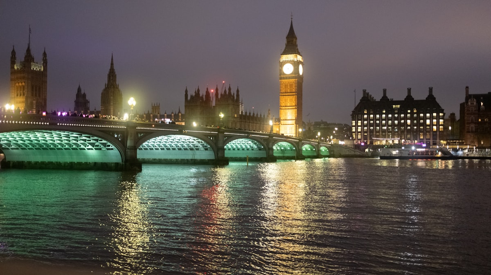
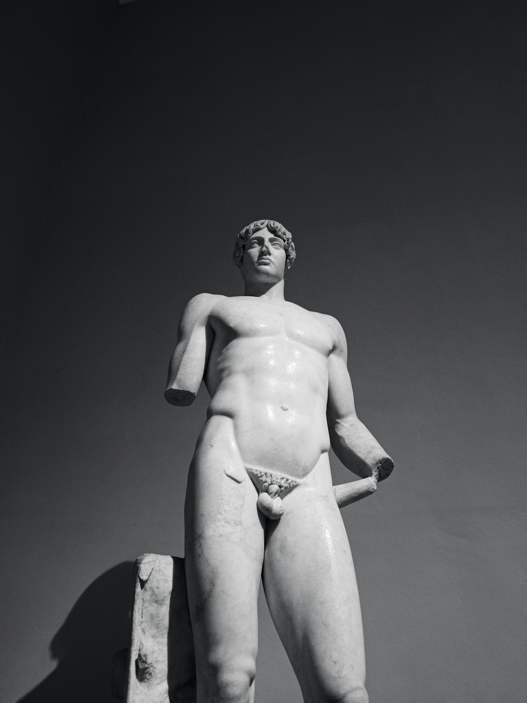
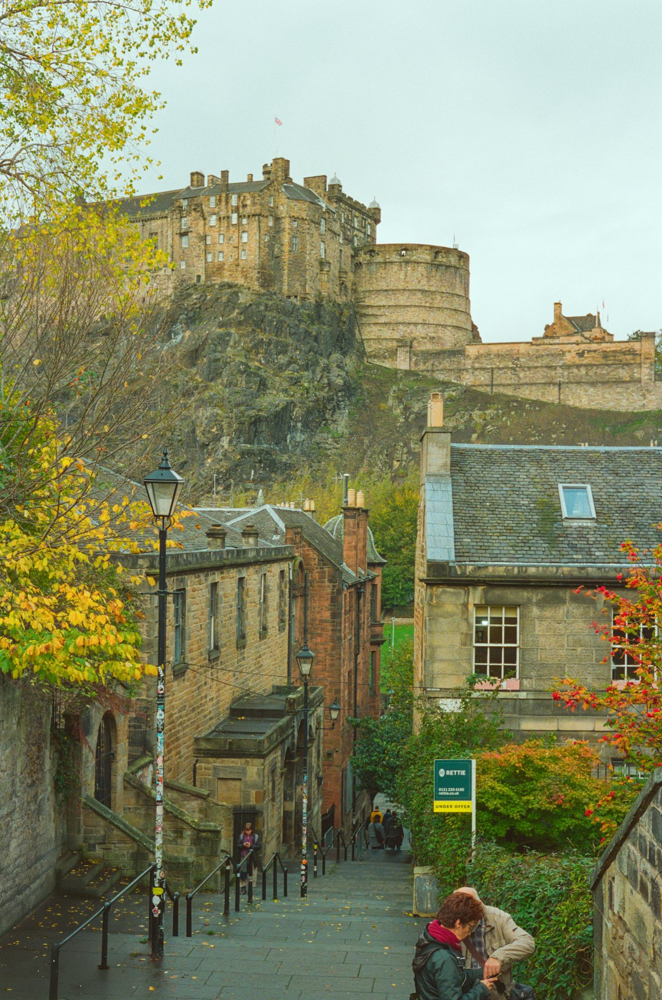
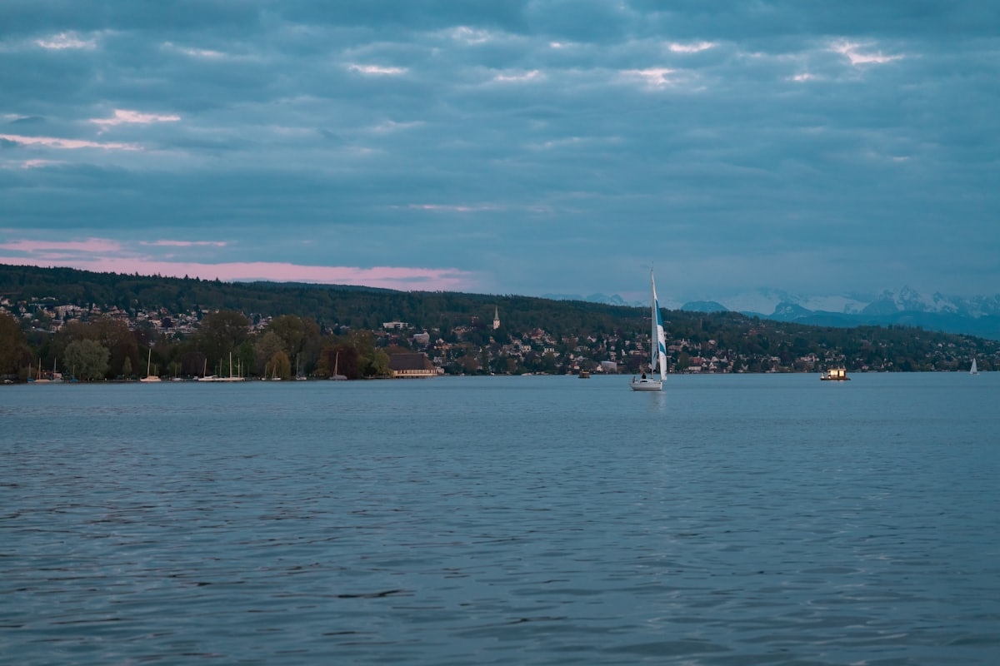
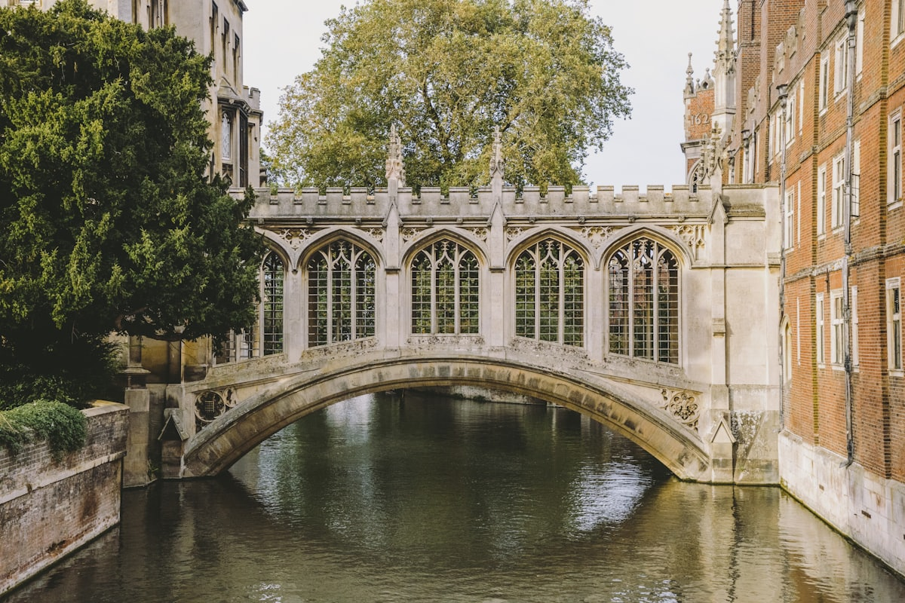
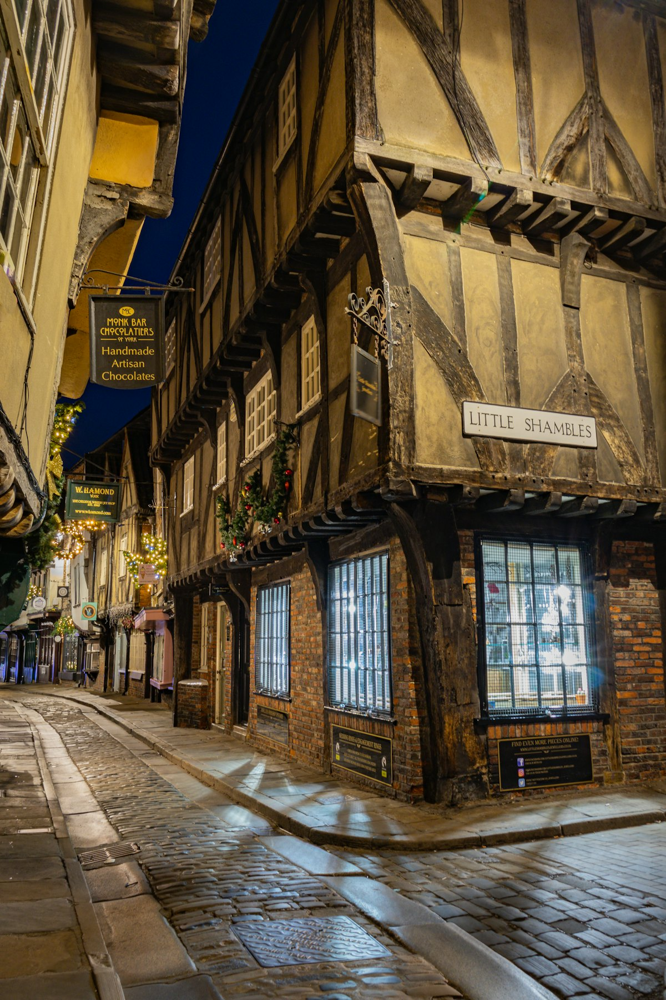
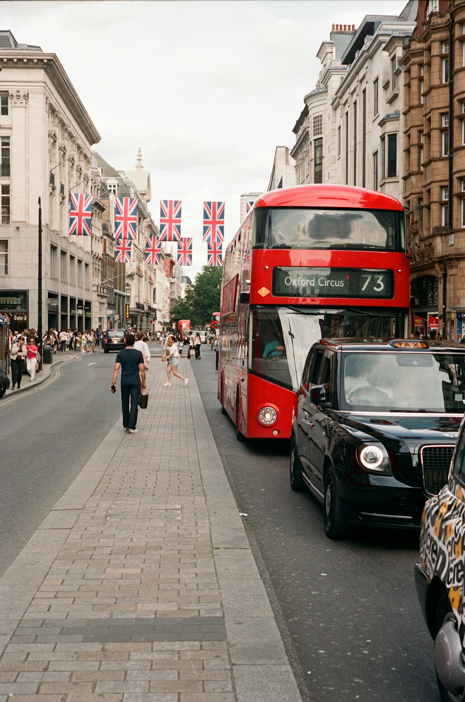

| 事项 | 结论 |
|---|---|
| 事项 | 结论 |
| 签证（最关键） | 中国护照需办标准访客签证：在线申请 + 签证中心指纹采集，常规约 15 个工作日出签，6 个月签费用约 115–135 英镑（中英互惠政策下中国申请人自动升级为 2 年多次） |
| 时差 | 英国比北京慢 8 小时（冬令时）/ 7 小时（夏令时），建议前两天安排轻松行程倒时差 |
| 电源 | 230V · G 型三脚插座（英标），国内插头必须带转接头 |
| 货币 | 英镑 £，1 英镑 ≈ 9.2 元人民币；伦敦基本刷卡（Contactless/Apple Pay），小额现金备 100–200 英镑即可 |
| 行程链 | 北京→伦敦（5 天）→剑桥→牛津→约克→曼城/利物浦→湖区（2 天）→爱丁堡（3 天）→返程 |
| 预算（人均） | 经济 12000–18000 ／ 标准 22000–32000 ／ 舒适 50000–70000（人民币） |
| 三件提前事 | ① 办签证（提前 1 个月以上）② 订北京⇄伦敦往返机票（提前 60–90 天）③ LNER 火车票提前 2–4 周订（省约 47%） |
| 支付 | Contactless 信用卡/Apple Pay 全城通用，地铁公交刷 Oyster 或手机绑卡，每日有扣款封顶 |
以下为 15 天 14 晚的推荐节奏：前 5 天深度玩伦敦，随后沿东海岸北上（剑桥→牛津→约克→曼城/利物浦→湖区），最后 3 天爱丁堡收尾。每日主景点 ≤2 个，城际以 LNER 高铁为主，市内靠 Oyster/Contactless。
| 日期 | 行程 | 过夜地 | 主题 |
|---|---|---|---|
| D1 抵伦敦 | 北京✈伦敦（国航直飞约 11h），希思罗→市区入住，傍晚泰晤士河畔看伦敦眼夜景 | 伦敦 | 抵达+预热 |
| D2 | 大本钟+国会大厦 → 威斯敏斯特大教堂 → 白金汉宫卫兵换岗 → 圣詹姆斯公园 | 伦敦 | 威斯敏斯特 |
| D3 | 大英博物馆（免费）→ 考文特花园 → 莱斯特广场/苏活 | 伦敦 | 博物馆日 |
| D4 | 伦敦塔 → 伦敦塔桥 → 泰晤士河游船 → 圣保罗大教堂 | 伦敦 | 泰晤士河日 |
| D5 | 国家美术馆+特拉法加广场 → 海德公园 → 牛津街/摄政街购物 | 伦敦 | 艺术购物日 |
| D6 | 剑桥一日：国王学院 → 康河撑船 → 数学桥/叹息桥 | 伦敦 | 剑桥日 |
| D7 | 牛津一日：大学城漫步 → 博德利图书馆 → 基督教堂学院 | 伦敦 | 牛津日 |
| D8 | 火车北上约克：约克大教堂 → 肉铺街 → 城墙徒步 | 约克 | 中世纪日 |
| D9 | 曼彻斯特（足球博物馆/科学工业博物馆）或 利物浦（披头士/阿尔伯特码头） | 曼城/利物浦 | 工业城日 |
| D10 | 湖区：温德米尔湖游船 → 彼得兔世界 → 湖畔小镇 | 湖区 | 湖区第一日 |
| D11 | 湖区：格拉斯米尔/安布塞德徒步或游湖 → 午后火车赴爱丁堡 | 爱丁堡 | 湖区第二日 |
| D12 | 爱丁堡城堡 → 皇家一英里 → 卡尔顿山日落 | 爱丁堡 | 城堡日 |
| D13 | 亚瑟王座徒步 → 苏格兰国家博物馆 | 爱丁堡 | 苏格兰日 |
| D14 | 荷里路德宫 或 罗西林教堂 或 购物伴手礼自由行 | 爱丁堡 | 自由日 |
| D15 返程 | 爱丁堡✈北京（经伦敦/迪拜转机）或 爱丁堡→伦敦→北京，到家休息 | — | 收尾 |
以下为 15 天全程的逐小时执行时间线，可当作「当天打开照着走」的清单。标注 ※ 的可选项视体力与天气取舍。
| 时间 | 事项 |
|---|---|
| 09:30–13:30 | 北京✈伦敦希思罗（国航直飞约 11h，提前选左侧靠窗看英吉利海峡与泰晤士河口） |
| 13:30–15:30 | 入境后进城：伊丽莎白线（Oyster/Contactless £15.50，约 35min）或希思罗快线（15min，提前 30 天订低至 £10） |
| 16:00–18:00 | 入住伦敦酒店（推荐 Zone1 考文特花园/威斯敏斯特，或 Zone2 国王十字交通枢纽） |
| 19:00–21:30 | 泰晤士河畔夜游：伦敦眼夜景（£25 起）+ 大本钟亮灯，晚餐尝炸鱼薯条 |
| 时间 | 事项 |
|---|---|
| 09:00–10:30 | 威斯敏斯特大教堂（成人约 £27，网上订 £23）：加冕教堂与牛顿墓、无名战士墓 |
| 10:30–11:30 | 大本钟 + 国会大厦（外观免费）：伊丽莎白塔与威斯敏斯特宫，泰晤士河岸经典机位 |
| 11:45–13:00 | 白金汉宫卫兵换岗（免费）：约 11:00 开始，提前 40 分钟到维多利亚纪念碑前占位 |
| 14:00–16:00 | 圣詹姆斯公园 + 海德公园（免费）：皇家公园连廊，喂天鹅看松鼠，白金汉宫后门好拍照 |
| 18:00 | 晚餐：威斯敏斯特或考文特花园附近 pub 晚餐，尝英式烤肉 Sunday Roast |
| 时间 | 事项 |
|---|---|
| 09:30–13:30 | 大英博物馆（免费，需官网预约时段）：罗塞塔石碑、埃及馆木乃伊、埃尔金大理石雕、中国馆 |
| 13:30–15:00 | 午餐：大英博物馆附近街区 或 罗素广场旁的英式三明治/意面 |
| 15:00–17:30 | 考文特花园（免费）：街头艺人广场、苹果市场、皇室歌剧院 |
| 17:30–19:00 | 莱斯特广场/苏活（免费）：中国城晚餐或音乐剧（《悲惨世界》《妈妈咪呀》约 £30–60） |
| 20:00 | 伦敦夜生活可选：酒吧、爵士吧或继续逛商场 |
| 时间 | 事项 |
|---|---|
| 09:30–12:30 | 伦敦塔（成人 £37）：白塔、皇家珠宝室、叛徒门，英国千年皇家要塞 |
| 12:30–13:30 | 伦敦塔桥（桥面免费）：玻璃栈道（展览约 £13）+ 塔桥升桥时段 |
| 13:30–14:30 | 博罗市场（免费）：伦敦最老食品市场，街头美食午餐 |
| 15:00–16:30 | 泰晤士河游船（威斯敏斯特⇄塔桥往返约 £18）：水上视角看塔桥、圣保罗、伦敦眼 |
| 17:00–18:30 | 圣保罗大教堂（成人约 £23，登顶穹顶）：欣赏千禧桥与金融城天际线 |
| 时间 | 事项 |
|---|---|
| 09:30–12:00 | 国家美术馆 + 特拉法加广场（免费）：梵高向日葵、莫奈睡莲、达芬奇手稿 |
| 12:00–13:00 | 午餐：特拉法加广场附近或皮卡迪利街边 |
| 13:30–15:30 | 海德公园（免费）：蛇形湖泛舟、演讲者之角，或转战肯辛顿花园 |
| 15:30–18:30 | 牛津街/摄政街/邦德街（免费）：Selfridges、哈罗德百货、利宝百货旗舰店购物 |
| 19:00 | 晚餐：苏活或中国城，或预订一场英式下午茶收尾 |
| 时间 | 事项 |
|---|---|
| 08:30–09:30 | 伦敦国王十字乘火车到剑桥（约 1h，票提前订 £10–20） |
| 10:00–12:30 | 国王学院（参观约 £12）：哥特式礼拜堂、剑河草坪，剑桥名片 |
| 12:30–13:30 | 午餐：剑桥市场（市集广场）或三一学院旁咖啡馆 |
| 14:00–16:00 | 康河撑船（拼船约 £28–45/人）：数学桥、叹息桥、皇后学院后花园（College Backs） |
| 16:00–17:30 | 三一学院 + 圣约翰学院（外观免费，内部部分收费）：牛顿苹果树、叹息桥 |
| 17:30 | 返程火车回伦敦（或宿剑桥次日直接北上去约克） |
| 时间 | 事项 |
|---|---|
| 08:30–09:30 | 伦敦帕丁顿乘火车到牛津（约 1h，提前订 £10–20） |
| 10:00–12:00 | 博德利图书馆（约 £15，需预约）：拉德克利夫圆顶、中世纪汉弗莱公爵图书馆 |
| 12:00–13:00 | 午餐：牛津高街或市场街 |
| 13:30–15:30 | 基督教堂学院（成人约 £15）：哈利波特大礼堂取景地 + 大汤姆塔 |
| 15:30–17:00 | 大学城自由漫步（免费）：叹息桥（牛津版）、圣玛丽教堂登顶俯瞰全城、莫德林学院 |
| 17:30 | 返程火车回伦敦 |
| 时间 | 事项 |
|---|---|
| 07:30–09:30 | 伦敦国王十字乘 LNER 到约克（约 2h，提前订 £25–60） |
| 10:00–12:00 | 约克大教堂（成人 £20）：欧洲最大中世纪哥特式教堂，世界最大中世纪彩绘玻璃「大东窗」 |
| 12:00–13:30 | 肉铺街（免费）：哈利波特对角巷灵感地，黄油啤酒+鬼魂漫步 |
| 13:30–15:30 | 约克城墙徒步（免费）：英格兰最完整中世纪城墙，登墙远眺大教堂 |
| 15:30–17:00 | 大英铁路博物馆（免费）或 克利福德塔（£7）：火车迷必去，日本子弹头+苏格兰飞人 |
| 17:30 | 火车继续北上去曼彻斯特/利物浦（约 1.5h） |
| 时间 | 事项 |
|---|---|
| 08:30–09:00 | 从约克或曼城酒店出发 |
| 09:30–12:00 | 曼彻斯特线：老特拉福德球场参观（曼联，£20+）或 利物浦线：安菲尔德球场（利物浦，£25+） |
| 12:00–13:30 | 午餐：曼城北角街区 或 利物浦阿尔伯特码头海鲜 |
| 13:30–16:00 | 曼城：科学工业博物馆（免费）+ 曼彻斯特美术馆；利物浦：披头士故事馆（£20）+ 阿尔伯特码头 |
| 16:00–18:00 | 利物浦可选：皇家利物大厦/洞穴俱乐部（披头士首演地）；曼城可选：国家足球博物馆（免费） |
| 18:30 | 晚餐后入住曼城或利物浦酒店 |
| 时间 | 事项 |
|---|---|
| 08:30–10:00 | 曼城/利物浦乘火车到温德米尔站（约 1.5–2h，湖区铁路线风景绝佳） |
| 10:30–12:30 | 温德米尔湖游船（船票约 £15）：湖区最大湖泊，湖光山色与群山倒影 |
| 12:30–13:30 | 午餐：鲍内斯（Bowness）湖边小镇午餐，湖畔鳟鱼或坎伯兰香肠 |
| 14:00–16:00 | 彼得兔世界（成人 £12.60）：比阿特丽克斯·波特童话馆，中文解说互动展 |
| 16:00–17:30 | 温德米尔镇（免费）：湖区国家公园游客中心、Orrest Head 观景台看日落 |
| 18:00 | 入住湖区 B&B 或湖景酒店 |
| 时间 | 事项 |
|---|---|
| 09:00–10:30 | 安布塞德（Ambleside）（免费）：湖畔小镇，桥屋与乌斯怀特湖 |
| 10:30–12:30 | 格拉斯米尔（Grasmere）（免费）：华兹华斯故居鸽舍、格拉斯米尔姜饼店 |
| 12:30–13:30 | 午餐：湖区 pub 午餐，尝尝英国湖区名产坎伯兰香肠与猪肉派 |
| 13:30–15:00 | 温德米尔湖西岸或徒步（免费）：挑一段轻松步道或再乘船横渡湖面 |
| 15:30–17:00 | 湖区→Oxenholme→爱丁堡火车（转 LNER 约 3h） |
| 18:00 | 抵达爱丁堡入住，皇家一英里夜游 |
| 时间 | 事项 |
|---|---|
| 09:30–12:30 | 爱丁堡城堡（成人 online £23.50）：皇家苏格兰军团博物馆、皇冠珠宝、一门「一点钟炮」 |
| 12:30–13:30 | 午餐：城堡脚下旧城区的苏格兰餐厅，尝尝哈吉斯 |
| 13:30–16:00 | 皇家一英里（免费）：从城堡一路下坡到荷里路德宫，圣吉尔斯大教堂、威士忌体验馆 |
| 16:30–18:30 | 卡尔顿山（免费）：国家纪念碑+纳尔逊纪念碑，俯瞰全城与福斯湾日落 |
| 19:00 | 晚餐：旧城区 pub 晚餐或苏格兰海鲜 |
| 时间 | 事项 |
|---|---|
| 09:00–11:30 | 亚瑟王座（免费）：荷里路德公园内的远古火山岩，登顶约 45min，俯瞰全城与海 |
| 11:30–12:30 | 午餐：荷里路德宫附近或苏格兰国家美术馆旁 |
| 13:00–15:30 | 苏格兰国家博物馆（免费）：达利十字、克隆羊多莉标本、苏格兰历史长廊 |
| 15:30–17:30 | 苏格兰威士忌体验馆（£25 起，可选）或 皇家植物园/新城乔治街 |
| 18:00 | 晚餐：爱丁堡新城餐厅，试试苏格兰三文鱼或鹿肉 |
| 时间 | 事项 |
|---|---|
| 09:30–12:00 | 荷里路德宫（成人约 £20）：英国王室苏格兰官邸，玛丽女王行宫 |
| 12:00–13:00 | 午餐：荷里路德宫附近或皇家一英里 |
| 13:30–16:30 | 选项 A：罗西林教堂（约 £11，《达芬奇密码》取景地，半小时车程）；选项 B：爱丁堡购物伴手礼（黄油曲奇、围巾、威士忌） |
| 17:00–19:00 | 迪恩村 + 新城（免费）：维多利亚街彩色建筑、乔治街，打卡苏格兰下午茶 |
| 20:00 | 回酒店收拾行李，次日返程 |
| 时间 | 事项 |
|---|---|
| 08:30–10:00 | 早餐后自由活动：皇家一英里最后扫货（苏格兰羊毛围巾、黄油曲奇、威士忌） |
| 10:00–11:00 | 退房，乘机场电车/巴士到爱丁堡机场（约 30min） |
| 11:00–14:00 | 爱丁堡✈北京（经伦敦/迪拜等转机，全程约 15–18h；直飞需经伦敦希思罗衔接） |
| 14:00–19:00 | 转机候机，机场免税店补货 |
| 19:00 | 抵达北京，入境回家，结束 15 天英伦之旅 |
必去（必去）/ 顺路（顺路）/ 可跳过（可跳过）。

必去
必去
必去
必去
必去
顺路图片为 Unsplash 主题图（伦敦天际线、大英博物馆、爱丁堡城堡、湖区、剑桥、约克、红色巴士、下午茶均为英国实景），用于页面配图。更多免费景点：国家美术馆、特拉法加广场、海德公园、考文特花园、圣詹姆斯公园、苏格兰国家博物馆。
点击左侧节点可在地图上定位；点击地图 marker 会高亮对应节点。坐标为 WGS-84 转 GCJ-02 纠偏后标注。
以下为单人、不含购物的估算，人民币计价；出发地基准北京。汇率按 1 英镑 ≈ 9.2 元人民币估算。往返机票按国航直飞淡季 5000–9000 元计（旺季 8–9 月可能翻倍）；住宿按 14 晚计，爱丁堡 8 月旺季与 5% 旅客税需另加。
| 项目 | 经济（12000–18000） | 标准（22000–32000） | 舒适（50000–70000） |
|---|---|---|---|
| 往返机票 | 北京⇄伦敦转机 4000–5500 | 直飞 6000–9000 | 直飞商务/灵活 12000–20000 |
| 住宿（14 晚） | 青旅/B&B 300–500/晚 | 中档酒店 700–1200/晚 | 精品/星级 1500–3000/晚 |
| 交通（火车+市内） | 单程 Advance + Oyster 1800–2800 | LNER 往返 + 市内 3200–5000 | 火车 + 包车/打车 8000–13000 |
| 门票 | 免费景点为主 600–1000 | 含伦敦眼/城堡等 1800–2800 | 全含 + 演出 + 下午茶 5000–9000 |
| 餐饮（15 天） | 超市 Meal Deal + 快餐 2800–3800 | 正常下馆子 4500–6500 | 米其林/下午茶 9000–15000 |
带娃推荐：伦敦自然历史博物馆（免费恐龙馆）+ 大英博物馆少年向导 + 伦敦动物园；湖区加长彼得兔世界与温德米尔蒸汽船；砍掉牛津与曼城/利物浦。剑桥撑船对小孩很友好，约克肉铺街有官方哈利波特主题店。英国 11 岁以下地铁公交免费（随成人）。
把爱丁堡扩为 5–6 天：爱丁堡 3 天 + 高地 2 天（格伦科峡谷、威廉堡、尼斯湖）+ 天空岛 1–2 天（波特里、老人峰），或坐「苏格兰高地铁路」（Jacobite 蒸汽火车）穿越格伦芬南高架桥。该版本建议自驾或参团，行程至少 18 天。
| 方式 | 时长 | 参考价 | 备注 |
|---|---|---|---|
| 直飞（推荐） | 北京→伦敦约 11h | 往返 5000–9000 元 | 国航 CA 直飞希思罗，每天 1–2 班，提前 60–90 天订 |
| 转机 | 15–20h | 3500–5500 元 | 经上海/香港/迪拜/多哈，便宜但费时 |
| 国际铁路 | — | — | 中英无陆路直连，只能飞机（或西伯利亚铁路+欧洲段，耗时数日不现实） |
| 区域 | 价格/晚 | 优点 | 短板 |
|---|---|---|---|
| 伦敦·Zone1 考文特花园/威斯敏斯特 | 经济 500–800 / 标准 900–1600 | 景点步行可达，夜生活丰富 | 全英最贵 |
| 伦敦·Zone2 国王十字/帕丁顿 | 经济 400–650 / 标准 700–1300 | 机场+北上火车枢纽 | 略偏市中心 |
| 剑桥·市中心 | 经济 450–700 / 标准 800–1400 | 学院步行可达 | 房量少旺季紧张 |
| 约克·城墙内 | 经济 400–650 / 标准 700–1200 | 中世纪古城氛围 | 老建筑隔音一般 |
| 湖区·温德米尔/鲍内斯 | B&B 500–900 / 湖景 1000–2500 | 湖景房、童话氛围 | 旺季紧俏需提前 3 个月 |
| 爱丁堡·老城/新城 | 经济 450–700 / 标准 800–1500 | 城堡与皇家一英里步行 | 8 月艺穗节翻 2–3 倍+5% 旅客税 |